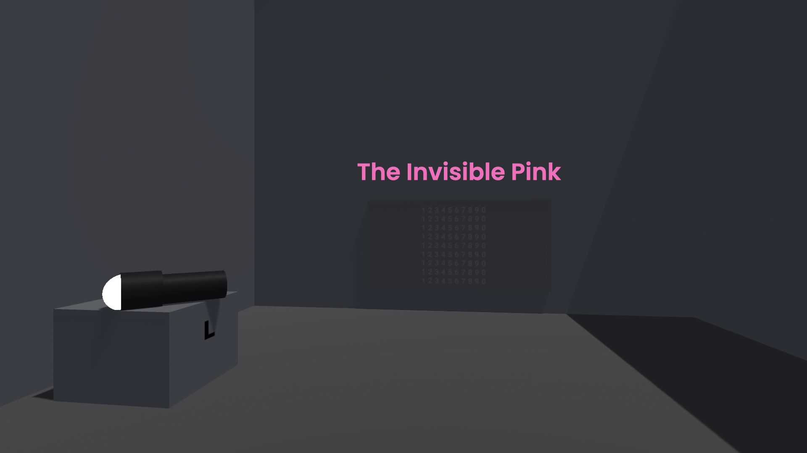
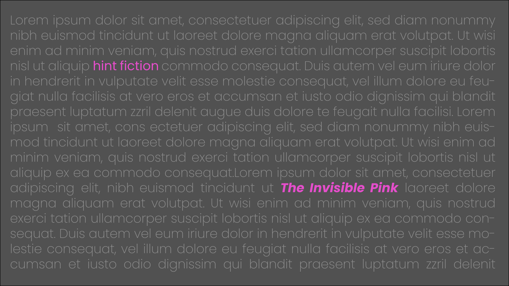
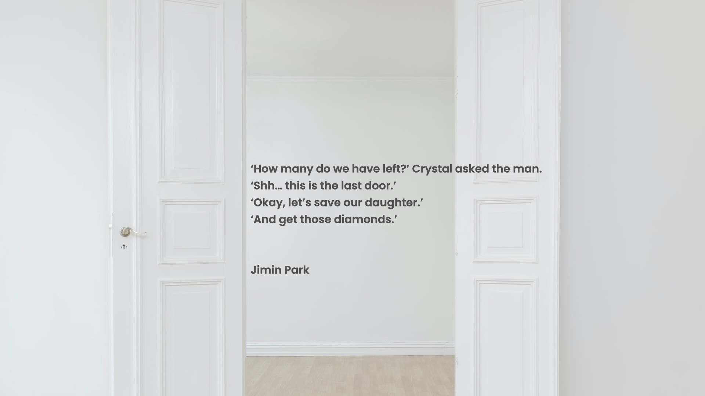

<!DOCTYPE html>

<html lang="en">
    
    <head>

        <meta charset="utf-8" name="viewport" content="width=device-width, initial-scale=1.0">
        <link rel="stylesheet" type="text/css" href="../style.css">
        <script type="module" src="../three.js" defer></script>

    

        <title>Minnie's Frostie</title>

         <!-- Favicon -->
         <link rel="apple-touch-icon" sizes="180x180" href="../favicon/apple-touch-icon.png">
         <link rel="icon" type="image/png" sizes="32x32" href="../favicon/favicon-32x32.png">
         <link rel="icon" type="image/png" sizes="16x16" href="../favicon/favicon-16x16.png">
         <link rel="manifest" href="../favicon/site.webmanifest">

        <style>
            body {
                background-color: rgb(31, 33, 34);
                background-image: linear-gradient(to right, rgba(255, 255, 255, 0), rgba(70, 48, 65, 0.794));
                background-image: cover;
                
            }
        </style>

    </head>

    <body>

        <header>
            <div id="header-section">
                <nav>
                    <ul>
                        <li><a href="../index.html"></a></li>
                    </ul>
                </nav>
                
                <audio id="bgm" src="../audio/flashlight.mp3" autoplay loop ></audio>
                <script>
                    var bgm = document.getElementById("bgm");
                    bgm.volume = 0.2;
                    var musicPlay = document.getElementById("musicPlay");
                    musicPlay.onclick = function(){
                        if(bgm.paused){
                            bgm.play();
                            musicPlay.src="../img/musicnote.png";
                        } else {
                            bgm.pause();
                            musicPlay.src="../img/pause.png";
                        }
                    }
                </script>
            </div>
        </header>
<!-- 
<h1 id="top"></h1>
<br><br><br>
<div class ="text-wrapper">
    <h2>THE UGLY BLUE BUTTON TO PLAY THE GAME</h2>
    <h2>THE UGLY BLUE BUTTON TO PLAY THE GAME</h2>
    <h2>THE UGLY BLUE BUTTON TO PLAY THE GAME</h2>
    <h2>THE UGLY BLUE BUTTON TO PLAY THE GAME</h2>
</div> <br><br>
       

<div id="embed">
<iframe id='webgl_iframe' frameborder="0" allow="autoplay; fullscreen; vr" allowfullscreen="" allowvr=""
    mozallowfullscreen="true" src="https://play.unity.com/webgl/4e7b85e8-8bf6-4e45-8f65-32b6a3409c1d?screenshot=false&embedType=embed"  width="800"
    height="475" onmousewheel="" webkitallowfullscreen="true"></iframe></div>

    <br><br><br><br><br><br><br>

<div class="contentBox" >
    <h3>WHAT IS IT?</h3><br>

    <br><br>
    <p2>THE INVISIBLE PINK</p2>
    <p>
    The invisible pink is the last room before they open the safe to get the diamonds and save their sick daughter. And you need a secret code to open the last door to the safe. When they turn on the flashlight and point it to the wall with numbers, it shows the secret mark in pink on 6 digits of the secret code.
    <br><br>
    There is only one other object which has a pink mark on it, that is the vault or the code pad to open the door, and the pink mark only appears when the flashlight is pointing the light to it.
    </p><br><br></div>

  

</div>
<div class="contentBox" >
    <h3>DESIGN APPROACH</h3><br>

    <br><br>

    <p2>Concept Design: Hint Fiction</p2>
      <p>
        Hint fiction is a short story consisting of maximum 25 words which often implicates more complex and larger stories than the given words. To illustrate this effectively, hint fiction really emphasises the brevity and implications.
    </p><br>
      <p>
        I tried to convey my feelings and emotions of one good day in springtime, especially when there is a spring shower. The game is designed with a few key elements which work effectively together to illustrate these feelings.
    </p><br>
    
    <p2>My hint fiction</p2><br>
    <p>
     My own hint fiction as a part of my work. It is written with 25 words, and this will introduce the story of my work, the invisible pink.   
    </p><br>
    <br><br>
    <p3>
    ‘How many do we have left?’ Crystal asked the man. <br>
    ‘Shh… this is the last door.’ <br>
    ‘Okay, let’s save our daughter.’ <br>
    ‘And get those diamonds.’<br>
    </p3><br>
    <p>
        It implies that this couple is trying to get diamonds from someone’s safe which is located inside of many rooms and they opened several doors before they got to this final room to the safe. They are desperate to get diamonds to save their sick daughter.
    </p>
    <p>
    I deliberately omitted any other details or objects to make sure the design is simple and concise, yet still implies further information beside of what’s already there.
    </p><br>
    <br><br>
    <p2>Technical Design: JavaScript Code Work</p2>
    <p>
        Several scripts are written for the game, which is for the control for users to pick up or drop the flashlight, to show the secret code in pink only when you flash the light on it, and the flashlight itself with its light on and off with a keycode.    </p><br>
    <p>
        I’ve also wanted to implement other interactive elements like opening the vault, I would like to keep developing it to make it more interactive, such as opening the vault once they found the secret code to it.     
    <br><br>

    <p2>Aesthetics, Colour Palette and Sound Design</p2>
    <p>
The design focus was to really highlight the pink and nothing else. Pink is the main colour and all the other colours are used in greyscales. There are minimum instructions on how to play the game to ensure to adapt the features of brevity and omission of the hint fiction. The only sound is the ambient background music.  
    </p><br><br>
  </div>

<div class="contentBox" >
    <h3>REFLECTION</h3><br>
<p>
    Through understanding and thinking about constraints and limitations actually affected me a lot in making effective design decisions. I feel like it opened my eyes to understand how important it is to apply deliberate omissions and make it concise and simple to make my design more effective. I am definitely going to keep reminding myself of these lessons for my future work. I’m grateful to have this opportunity to grow and mature more as a digital media designer. 
</p><br><br>
</div><br>


<div class="bottomPage">
    <ul><li><a href="#top"></a></li></ul>
    <ul><li><a href="../index.html"></a></li></ul>
    <ul><li><a href="contact.html"></a></li></ul>
</div><br> -->


</body>

</html>

